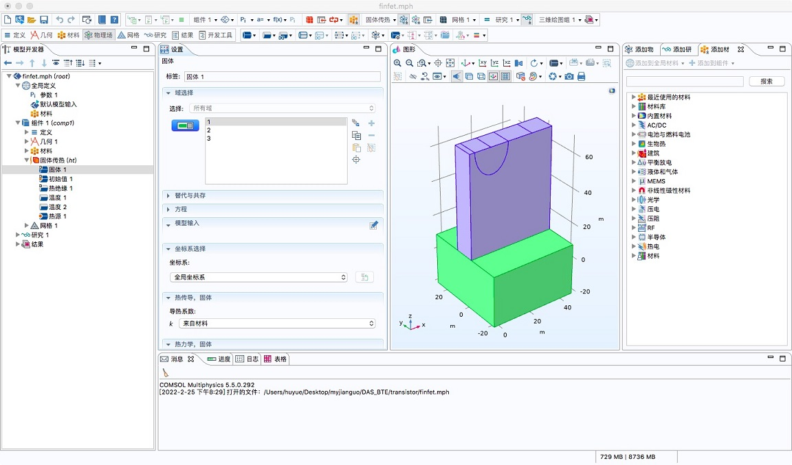
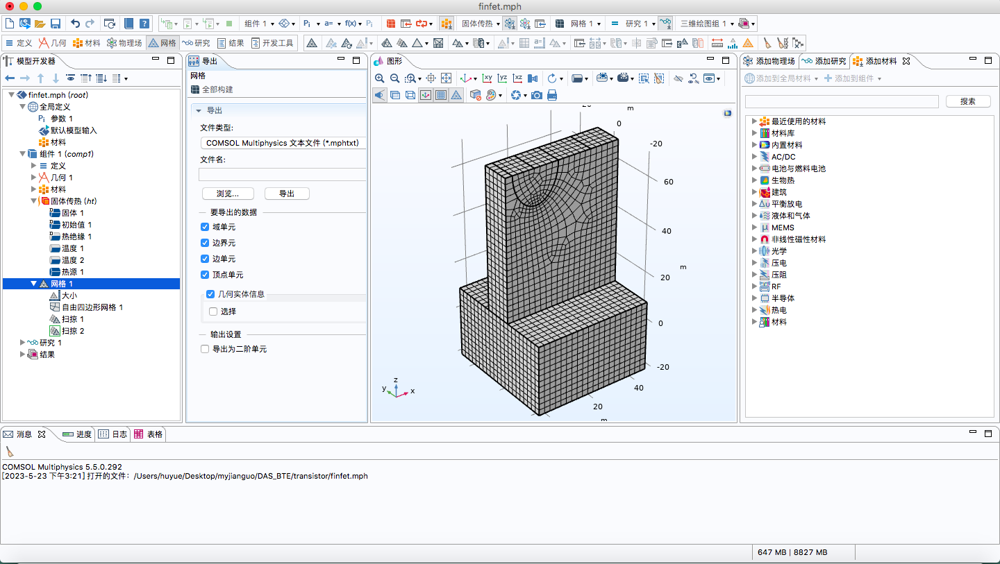
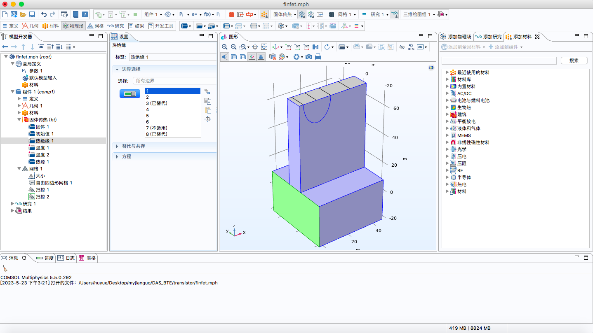
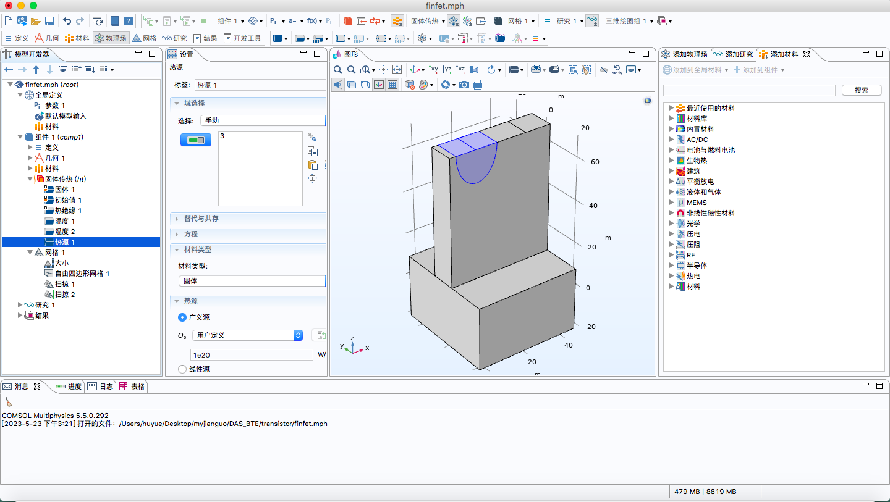

6. Tutorial
6.1 CASE 1: Temperature profiles in Fin field-effect transistors
Here is an example of predicting temperature rise of FinFET using mesh files generated from COMSOL software and phonon properties calculated from ALAMODE package. The files are listed as the following:
input
├── CONTROL
├── GEOMETRY
├── PHONON
├── FinFet_bound_1w4.mptxt
├── inputbc_Finfet.dat
├── heatfile.xt
├── materials
├── Si
├── tau300K_pure.dat
Create a CONTROL file
The CONTROL file of this example is typed as the following:
Order: //1:first order; 2:second order; 2limit: limited second order
2
IterativeScheme: // Synthetic or Sequential
Synthetic
MatrixSolver: // LU or BICGSTAB
LU
ResidualTemp:
1e-5
ResidualFlux:
1e-2
This CONTROL file tells the GiftBTE to adopt 2nd order spatial discretization and synthetic iterative scheme. The MatrixSolver is LU factorization. The convergence criteria for temperature and heat flux are also specified.
Create a GEOMETRY file
The GEOMETRY file of this example is typed as the following:
GeometryDimension：//1 or 2 or 3
3
ScaleX:
1e-9
ScaleY:
1e-9
ScaleZ:
1e-9
BCFile:
input/inputbc_Finfet.dat
MeshfileType: // COMSOL or MSH
COMSOL
MeshFile=
input/FinFet_bound_1w4.mptxt
HeatfileType: //COORDINATE or REGION
REGION
HeatFile=
input/heatfile.xt
Attention: MeshType=”COMSOL” represents that the mesh file is generated from COMSOL software.
HeatType= “REGION” represents that uniform heat source needs to be added in each geometry region.
Create FinFet_bound_1w4.mptxt file in COMSOL
Build geometry in COMSOL

Generate mesh

Export the mesh file (.mphtxt):
Created by COMSOL Multiphysics.
Major & minor version
0 1
1 # number of tags
Tags
5 mesh1
1 # number of types
Types
3 obj
--------- Object 0 ----------
0 0 1
4 Mesh # class
4 # version
3 # sdim
16930 # number of mesh vertices
0 # lowest mesh vertex index
Mesh vertex coordinates
-5 -25 -20
-3.0000000000000004 -25.000000000000007 -20.000000000000007
-5 -23.099999999999994 -20
-5 -25.000000000000004 -18
-1 -25.000000000000007 -20.000000000000004
-2.9999999999999964 -23.100000000000005 -20
-3.0000000000000004 -25 -18
-5 -21.199999999999996 -20
-5 -23.099999999999994 -18
-5 -25.000000000000004 -15.999999999999998
...
Create inputbc_FinFET.dat file
The inputbc_FinFET.dat is typed as the following:
18 #Number of boundaries
BoundaryIndex BoundaryType BoundaryValue //BoundaryIndex starts from 1 //BoundaryType=1:thermalizing; BoundaryType=2:diffusely reflecting; BoundaryType=3:specularly reflecting; BoundaryType=5:interficial; BoundaryType<0:periodic
1 3 0
2 2 0
3 1 300
4 3 0
5 2 0
6 3 0
8 1 300
9 2 0
10 2 0
11 2 0
12 1 300
14 2 0
15 2 0
16 1 300
18 1 300
19 1 300
20 3 0
21 2 0
How to know the index of each boundary, see COMSOL

Attention: the boundary index of each boundary in the inputbc_FinFET.dat file is equal to the index in COMSOL software. Meanwhile, boundaries that do not need to be specified, such as some internal boundaries, should not be typed in the inputbc_FinFET.dat.
Create heatsource.txt file
Set heat source in COMSOL. As shown below, the highlighted semi-cylinder region (i.e., the 3rd region) is where the heat source needs to be added.

The heatfile.txt is typed as the following (HeatType = “REGION”):
3 # geometry: #geo index - heat index start from 0
1 0
2 0
3 1e19
Attention: the geometry index of each geometry/region in the heatfile.txt file starts from “1”
Create a PHONON file
The PHONON file is typed as the following:
MaterialNumber=
1
BandNumber=
15
MaterialFile 1: ALAMODE
input/materials/Si/tau300K_pure.dat
GeometryMaterialType: #geometryindex and matterindex both start from 1
1 1
2 1
3 1
MaterialDimension:
3
Ntheta:
2
Nphi:
4
Attention: the geometry index of each geometry/region in the PHONON file starts from “1”. “ALAMODE” represents using phonon properties calculated from the ALAMODE package as the input
tau300K_pure.dat (created by ALAMODE Tutorial 7 phonon Lifetime)
#Result analyzer ver. 1.0.5
#Input file : si222_50_01.result
#Phonon lifetime at temperature 300 K.
#kpoint range 1 3107
#mode range 1 6
# ik, is, Frequency [cm^{-1}], Lifetime [ps], |Velocity| [m/s], MFP [nm], Multiplicity, Thermal conductivity par mode (xx, xy, ...) [W/mK]
1 1 1.09737e-10 0 0 0 1 0 0 0 0 0 0 0 0 0
1 2 1.09737e-10 0 0 0 1 0 0 0 0 0 0 0 0 0
1 3 1.09737e-10 0 0 0 1 0 0 0 0 0 0 0 0 0
1 4 509.651 1.6395 0 0 1 0 0 0 0 0 0 0 0 0
1 5 509.651 1.6395 0 0 1 0 0 0 0 0 0 0 0 0
1 6 509.651 1.6395 0 0 1 0 0 0 0 0 0 0 0 0
2 1 9.27625 5695.14 4347.12 24757.5 8 0.0988522 2.52613e-07 2.52613e-07 2.52613e-07 0.0988522 2.52613e-07 2.52613e-07 2.52613e-07 0.0988522
2 2 9.27625 5695.14 4347.12 24757.5 8 0.0990608 2.40786e-07 2.40786e-07 2.40786e-07 0.0990608 2.40786e-07 2.40786e-07 2.40786e-07 0.0990608